Chương 3 — Từ Đo Lường Đến Diễn Giải
Các khái niệm lý thuyết cần thiết để tính toán kinematics (động học) khớp, từ các quỹ đạo điểm đánh dấu, sẽ được trình bày trong chương này. Sau khi giới thiệu các mô tả khác nhau có thể có cho tư thế của các đoạn khâu cơ thể (vị trí và hướng trong không gian ba chiều (3D)), các khuyến nghị được đề xuất bởi Hội Cơ Sinh Học Quốc Tế (ISB) cho các khớp chính của con người nhằm làm cho mô tả các góc khớp trở nên đồng nhất hơn, và các giải pháp thay thế được đề xuất cho một số khớp cụ thể sẽ được thảo luận. Định nghĩa về các độ dịch chuyển khớp, thường bị bỏ qua, cũng sẽ được mô tả ở đây.
3.1. Các tham số khác nhau
Có nhiều cách để thiết lập các tham số cho một hệ thống. Ở đây, chúng ta chỉ thảo luận những tham số được dùng để phân tích chuyển động của con người. Trong bối cảnh này, khi chúng ta tập trung vào chuyển động của khớp, cơ thể con người thường được xem như một hệ cơ học gồm các vật rắn – các đoạn khâu cơ thể ổn định về kích thước – được nối với nhau. Do đó, chúng ta sẽ mô hình hóa cơ thể con người, nói cách khác là đề xuất các giả thuyết đơn giản để phân tích chuyển động dễ dàng hơn theo kết quả mong muốn. Như vậy, tùy thuộc vào ứng dụng dự định, chúng ta có thể giả định ví dụ trong trường hợp chi trên, rằng lồng ngực, cánh tay, cẳng tay và bàn tay là các vật rắn được khớp nối bởi vai, khuỷu tay và cổ tay tương ứng, nếu muốn phân tích tổng thể cử động, hoặc phân tích chi tiết hơn các đoạn xương và khớp khác nhau của vai hoặc bàn tay, trong các trường hợp khác.
Theo định nghĩa, một đoạn khâu cơ thể do đó sẽ được xem như một tập hợp các điểm vật chất liên kết cứng với nhau, nói cách khác là khoảng cách giữa các điểm này là không đổi bất kể chuyển động của đoạn khâu.
Một vật rắn (còn gọi là khối rắn) có thể chuyển động tự do trong không gian với sáu bậc tự do; nói cách khác, chuyển động của nó có thể được mô tả hoàn toàn bởi sáu tham số độc lập tương ứng với các chuyển động sơ cấp: ba tham số dịch chuyển của một điểm cụ thể của vật rắn, và ba tham số xoay của vật rắn quanh điểm này. Khi chúng ta quan tâm đến một hệ khớp nối các vật rắn, còn gọi là một chuỗi động học, các khớp đại diện cho các mối liên kết giữa các vật rắn làm chặn hoặc hạn chế một số bậc tự do của chúng.
Để thiết lập các phương trình của bài toán này, chúng ta liên kết một hệ tọa độ trực chuẩn với mỗi vật rắn. Một hệ tọa độ trực chuẩn là một công cụ toán học gồm một gốc tọa độ (một điểm cụ thể) và ba vectơ đơn vị (có chuẩn hoặc độ dài bằng một) theo cặp trực giao. Sau này, chúng ta sẽ mô tả cách hình thành một hệ tọa độ như vậy bằng cách sử dụng tối thiểu ba điểm đánh dấu cho mỗi đoạn khâu. Để đặc trưng hóa tư thế của một vật rắn, cần phải xác định tư thế của hệ tọa độ gắn với nó so với một hệ tọa độ khác, được xem là cố định. Trong trường hợp này, khi hệ tọa độ sau là cố định, tức là gắn với Trái Đất ở quy mô đang được quan tâm và do đó thường được ký hiệu là R0, chúng ta gọi là tham số hóa tuyệt đối; khi hệ tọa độ được xem là cố định là hệ tọa độ gắn với vật rắn nằm về phía gần (proximal) trong chuỗi động học, thì gọi là tham số hóa tương đối. Như vậy, nếu chúng ta chọn tham số hóa tuyệt đối, mô tả tư thế của đoạn khâu quan tâm Si sẽ phụ thuộc vào tất cả các tham số (dịch chuyển và xoay) của chuỗi động học từ hệ tọa độ R0 đến hệ tọa độ Ri (gắn với đoạn khâu Si), trong khi nếu chọn tham số hóa tương đối thì chỉ bao gồm các tham số đặc trưng cho chuyển động của hệ tọa độ Ri so với hệ tọa độ Ri-1, tức là các tham số của khớp giữa hai vật rắn hay tham số khớp.
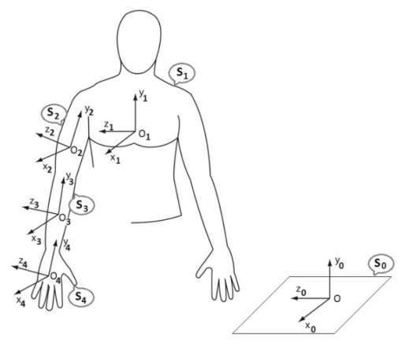
Phương pháp tham số hóa được sử dụng phổ biến nhất trong phân tích chuyển động là tham số hóa tương đối, sẽ được mô tả trong phần còn lại của chương này. Tuy nhiên, tiếp cận tọa độ tổng quát bao gồm việc biểu diễn vị trí và hướng của mỗi vật rắn bằng sáu tham số và chuyển đổi các khớp giữa chúng thành các phương trình ràng buộc và rất có tính hệ thống [HAU 89, NIK 91]. Đặc biệt, cách tiếp cận này được ưu tiên khi hệ có các vòng động học (hay các đóng kín động học). Một biến thể của cách tiếp cận này, gọi là tiếp cận tọa độ tự nhiên, xem xét các tọa độ tổng quát của các điểm cụ thể và các vectơ đơn vị gắn với các vật rắn, từ đó đơn giản hóa việc xử lý các khớp, thường chỉ bằng cách liên kết các điểm chung hoặc các vectơ đơn vị giữa hai đoạn liên tiếp và cuối cùng tương ứng với một sự lắp ráp. Cần thêm các phương trình ràng buộc để biểu diễn tính cứng của các vật thể hoặc cố định chuẩn của các vectơ đơn vị, nhưng chúng có ưu điểm là các hàm đơn giản của các tọa độ và cung cấp một điều kiện hóa xuất sắc cho tích phân số [GAR 87].
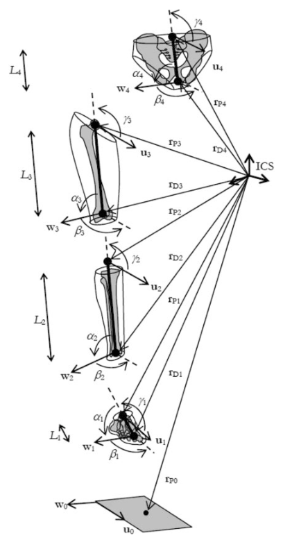
Trong phân tích chuyển động, tham số hóa tương đối được ưu tiên rộng rãi, với hai cách tiếp cận khả dĩ: cách thứ nhất xác định a priori các bậc tự do của mỗi khớp để hình thành một chuỗi động học bằng cách sử dụng các quy ước giúp hệ thống hóa dễ dàng phép tính; cách thứ hai thường giả định rằng các độ dịch chuyển khớp là không đáng kể và mô tả chuyển động tương đối giữa hai đoạn khâu cơ thể bằng một phép xoay quanh một điểm chung cho cả hai đoạn, tương ứng với việc mô hình hóa mỗi khớp bằng một khớp cầu (khớp bi).
Trong cách tiếp cận thứ nhất, quy ước Denavit–Hartenberg [DEN 55], được sử dụng phổ biến nhất [CHE 96, SAN 06b], bao gồm việc chia chuỗi động học thành nhiều đoạn cứng bằng số bậc tự do yêu cầu, và sử dụng một số lượng tham số tối thiểu: hình dạng hình học của đoạn khâu được xác định bởi ba tham số hình dạng (hằng số) và sự chuyển từ đoạn này sang đoạn tiếp theo chỉ liên quan đến một bậc tự do (dịch chuyển hoặc xoay). Các tham số này được xác định bằng cách tuân thủ các quy ước sau:
- Z_{i-1} là trục của khớp nối các đoạn Si-1 và Si;
- X_i vuông góc với cả hai trục Z_{i-1} và Z_i;
- d_i là khoảng cách giữa các gốc liên tiếp dọc theo trục khớp;
- θ_i là góc giữa các trục X_{i-1} và X_i, được xác định theo Z_{i-1};
- a_i là khoảng cách giữa các gốc liên tiếp dọc theo X_i;
- α_i là góc giữa các trục Z_{i-1} và Z_i, được xác định theo X_i.
Giữa hai đoạn khâu, có thể xem xét một bậc tự do trong xoay, khi đó biến khớp là góc θ_i, hoặc xem xét một bậc tự do trong dịch chuyển và khi đó biến khớp là khoảng cách d_i.
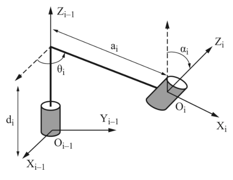
Nếu một chuỗi động học được tham số hóa bằng cách tuân thủ quy ước này, thì ma trận thuần nhất mô tả vị trí và hướng của đoạn Si so với đoạn trước luôn được viết theo cùng một cách, theo bốn tham số (chỉ một trong số đó là biến).
T_i = [ cosθ_i -sinθ_i·cosα_i sinθ_i·sinα_i a_i·cosθ_i ] [ sinθ_i cosθ_i·cosα_i -cosθ_i·sinα_i a_i·sinθ_i ] [ 0 sinα_i cosα_i d_i ] [ 0 0 0 1 ]
Trong ma trận này, phần 3 × 3 ở góc trên bên trái tương ứng với ma trận xoay tương đối giữa các đoạn khâu, với mỗi cột gồm các thành phần vectơ đơn vị của hệ tọa độ Ri, và cột thứ tư gồm các thành phần vectơ nối các gốc của các đoạn liên tiếp, được biểu diễn trong hệ tọa độ của đoạn phía trước (Ri-1). Mô hình hình học hoàn chỉnh của chuỗi này, tức là ma trận thuần nhất biểu diễn tư thế của đoạn cuối của chuỗi trong hệ tọa độ gốc R0, thu được đơn giản bằng cách nhân các ma trận sơ cấp này, như sau:
T_0^n = T_0^1 · T_1^2 · ... · T_{n-1}^n
Ma trận thuần nhất này giúp chúng ta tính các tọa độ trong hệ tọa độ cố định, bằng cách biết tọa độ của một điểm M trong hệ tọa độ gắn với đoạn cuối của chuỗi, sử dụng quan hệ:
OM|_{R0} = T_0^n · OM|_{Rn} với OM|_{Rn} = [ x_n y_n z_n 1 ]^T
Để thu được các giá trị của tham số khớp tại mỗi thời điểm, chúng ta có thể viết nghiệm một cách phân tích nếu số bậc tự do đủ nhỏ (tối đa ba). Nếu không, chúng ta có thể sử dụng tối ưu hóa số thay thế, sẽ cực tiểu hóa hàm sau đây biểu diễn độ chênh lệch giữa các điểm đánh dấu thực tế (cố định trên các đoạn khâu chuyển động) và các điểm đánh dấu tương ứng được xem là gắn cứng vào các đoạn của chuỗi:
f(q_hat) = [ P_hat - T_0^n(q_hat)·p_hat ]^T · W · [ P_hat - T_0^n(q_hat)·p_hat ] với q_hat là vectơ (n thành phần) của các tham số động học; p_hat là vectơ gồm các tọa độ thuần nhất (bốn thành phần) của các điểm đánh dấu trong hệ tọa độ cục bộ của đoạn khâu (coi là hằng số, và được xác định bằng cách ghi lại một tư thế tĩnh); P_hat là vectơ gồm các tọa độ thuần nhất của các điểm đánh dấu trong hệ tọa độ gốc R0 khi chuyển động; và T_0^n(q_hat) biểu diễn mô hình hình học của chuỗi động học, như một hàm của các tham số động học biến.
Về cách tiếp cận thứ hai, mỗi khớp giữa hai đoạn khâu cơ thể liền kề được xác định a priori bởi một khớp cầu, cho phép bất kỳ phép xoay nào quanh một điểm chung cho cả hai đoạn. Nhiều mô tả, tất cả đều dựa trên lý thuyết xoay của Euler (thiết lập năm 1775) phát biểu rằng “trong không gian 3D, bất kỳ chuyển động nào của một vật rắn mà một điểm trên vật thể đó giữ cố định thì tương đương với một phép xoay duy nhất quanh một trục đi qua điểm đó”, được dùng để mô tả một phép xoay tùy ý [SPR 86]: ma trận xoay, góc Euler, vectơ xoay (hay vectơ Gibbs, hay tham số Rodrigues) hoặc thậm chí các quaternion (hay tham số Euler). Trước khi mô tả giải pháp được ISB khuyến nghị để biểu diễn các chuyển động khớp, chúng ta sẽ tóm tắt ngắn gọn các mô tả khác nhau này, chỉ ra những ưu và nhược điểm chính của chúng.
Ma trận xoay
R_{i}^{i-1} (hay ma trận cosin hướng) gồm, trong các cột, các thành phần của ba vectơ đơn vị của hệ tọa độ gắn với đoạn Si được biểu diễn trong hệ tọa độ đoạn phía trước (hay đoạn gần) (SCS), ký hiệu là Ri-1:
R_{i}^{i-1} =
[ X_i·X_{i-1} Y_i·X_{i-1} Z_i·X_{i-1} ]
[ X_i·Y_{i-1} Y_i·Y_{i-1} Z_i·Y_{i-1} ]
[ X_i·Z_{i-1} Y_i·Z_{i-1} Z_i·Z_{i-1} ]
Trong thực tế, chúng ta thường mô tả tư thế của mỗi đoạn S (vị trí và hướng) trong hệ tọa độ gốc R0, cho mỗi hình ảnh ghi được, bằng cách sử dụng một ma trận thuần nhất, như sau:
T_0^S = [ R_0^S O_0^S ] [ 0 0 0 1 ] với R_0^S là ma trận 3×3 (phần xoay) và O_0^S là vectơ tọa độ của gốc đoạn trong R0.
Từ phần xoay (3 × 3 góc trên bên trái) của ma trận đặc trưng cho tư thế của các đoạn Si và Si-1, ma trận xoay tương ứng với chuyển động tương đối giữa Si và Si-1 được cho bởi:
R_{i}^{i-1} = (R_{i-1}^0)^{-1} · R_i^0
với (R_{i-1}^0)^{-1} là nghịch đảo của ma trận R_{i-1}^0.
Lưu ý rằng, với một ma trận xoay, nghịch đảo bằng ma trận chuyển vị,
được thu được dễ dàng bằng cách viết thành hàng các cột của ma trận ban đầu.
Chín phần tử của ma trận xoay không độc lập, vì nó trực giao và mỗi cột (hay hàng) biểu diễn một vectơ đơn vị, tất cả cho ba bậc tự do. Sự hợp thành của các phép xoay liên tiếp được biểu diễn dễ dàng, bằng phép nhân các ma trận xoay tương ứng, điều này làm cho nó rất tiện dụng để sử dụng.
Cách tiếp cận sử dụng góc Euler (hay các phép xoay quanh các trục di động) bao gồm việc tách chuyển động xoay 3D của hệ tọa độ thành ba phép xoay sơ cấp liên tiếp: phép xoay đầu tiên xảy ra quanh một trục của hệ tọa độ phía trước Ri-1, phép xoay cuối cùng diễn ra quanh một trục hệ tọa độ phía sau Ri và phép xoay trung gian diễn ra quanh trục được xác định bởi đường vuông góc chung với hai trục kia, gọi là trục nổi. Tuy nhiên, định nghĩa về góc Euler không là duy nhất và trong tài liệu có nhiều quy ước khác nhau được sử dụng. Các quy ước này phụ thuộc vào các trục mà các phép xoay xảy ra (X, Y hay Z), và thứ tự của chúng (các phép xoay không giao hoán). Do đó, không thể so sánh các giá trị góc thu được từ cách tiếp cận này nếu các trục hoặc thứ tự của dãy không hoàn toàn giống nhau.
Ví dụ, nếu chúng ta chọn dãy Z,X′,Y″ được đề xuất để phân tích chuyển động của các khớp gối (GRO 83], phép xoay đầu tiên xảy ra quanh trục Zi-1 gắn với đoạn phía trước hay đoạn gần (đùi) và tương ứng với gập/duỗi (ký hiệu là α), phép xoay thứ ba xảy ra quanh trục Yi gắn với đoạn phía sau hay đoạn xa (cẳng chân) và tương ứng với xoay trong/ngoài (ký hiệu là γ), và cuối cùng phép xoay trung gian xảy ra quanh trục nổi X, vuông góc với Zi-1 và Yi và tương ứng với varus/valgus (ký hiệu là β).
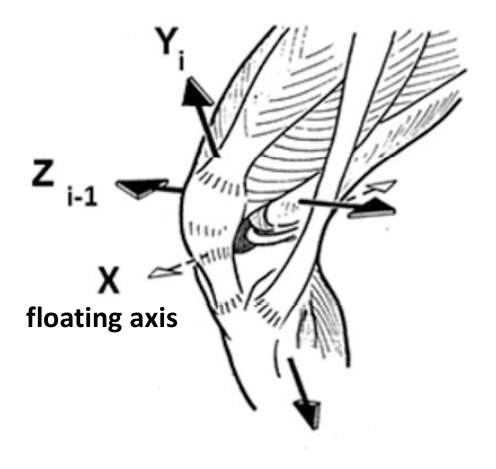
Ma trận xoay tổng thể R_{i}^{i-1} trong trường hợp này thu được bằng cách nhân các ma trận biểu diễn các phép xoay sơ cấp quanh mỗi trục, theo thứ tự của dãy đã chọn.
R_{i}^{i-1} = R(α, Z_{i-1}) · R(β, X) · R(γ, Y_i) (trục X là trục nổi)
R(α,Z) =
[ cosα -sinα 0 ]
[ sinα cosα 0 ]
[ 0 0 1 ]
R(β,X) =
[ 1 0 0 ]
[ 0 cosβ -sinβ ]
[ 0 sinβ cosβ ]
R(γ,Y) =
[ cosγ 0 sinγ ]
[ 0 1 0 ]
[ -sinγ 0 cosγ ]
Từ đó ta có dạng phân tích theo ba góc, với các phần tử δij là phần tử ở hàng i và cột j của ma trận.
R_{i}^{i-1} =
[ cosα·cosγ - sinα·sinβ·sinγ -cosα·sinγ - sinα·sinβ·cosγ sinα·cosβ ]
[ sinα·cosγ + cosα·sinβ·sinγ -sinα·sinγ + cosα·sinβ·cosγ -cosα·cosβ ]
[ -cosβ·sinγ cosβ·cosγ sinβ ]
Để thu được các giá trị của các góc khớp này, tại mỗi thời điểm của chuyển động, chúng ta sử dụng các phần tử đơn giản nhất của ma trận này từ các hàm lượng giác sau:
α = atan2(−δ12, δ22) β = asin(δ32) γ = atan2(−δ31, δ33)
Tuy nhiên, có thể thấy rằng trong các biểu thức này, cosin của góc β xuất hiện ở mẫu số cho việc tính toán các góc α và γ, điều này là một vấn đề khi nó tiến gần đến không; nói cách khác, khi β gần 90°.
α = atan2( δ12 , δ22·cosβ ) với δ12 = −cosα·sinγ − sinα·sinβ·cosγ γ = atan2( −δ31 , δ33·cosβ ) với δ31 = −cosβ·sinγ
Sự bất định này, do chia cho không, tương ứng với cái thường được gọi là khóa gimbal (gimbal-lock). Trong trường hợp khớp gối, không có nguy cơ xảy ra vấn đề này vì biên độ varus–valgus thấp, nhưng dãy này sẽ không phù hợp cho tất cả các khớp.
Một bản dịch trực tiếp của định lý Euler, cũng tương ứng với trường hợp đặc biệt của chuyển động vặn (hay chuyển động xoắn [WOL 85]) trong đó dịch chuyển là không đáng kể, bao gồm việc biểu diễn phép xoay 3D giữa Ri-1 và Ri bằng một phép xoay duy nhất quanh một trục không gian [CHE 00], gọi là một vectơ xoay:
V⃗ = θ · u⃗
Trục xoay được xác định bởi vectơ đơn vị u⃗ (duy nhất đến dấu), không đổi khi xoay, và giá trị của góc xoay θ cũng là duy nhất (dấu của nó được xác định bởi dấu của vectơ đơn vị). Cũng như tính duy nhất của nghiệm, một ưu điểm khác là vectơ xoay được biểu diễn hoàn toàn bởi ba thành phần vô hướng trong một hệ tọa độ cho trước. Với trục u⃗ là đơn vị, ba thành phần của nó tương ứng với hai bậc tự do, bậc thứ ba được cho bởi giá trị của góc xoay quanh trục này. Cũng dễ dàng hình thành toán tử xoay (ma trận 3 × 3) liên kết với vectơ xoay này, theo quan hệ sau:
R = cosθ·[I] + (1 − cosθ)·(u⃗·u⃗^T) + sinθ·[u⃗]× với [I] là ma trận đơn vị, u⃗^T là vectơ chuyển vị của u⃗ và [u⃗]× là ma trận sao cho nhân với một vectơ cho cùng kết quả như tích có hướng: [u⃗]× = [ 0 −u_z u_y ] [ u_z 0 −u_x ] [ −u_y u_x 0 ]
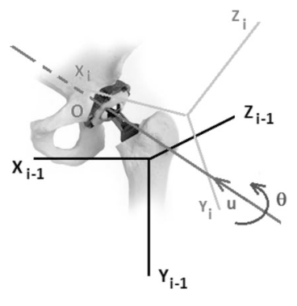
Cuối cùng, phép xoay không gian có thể được biểu diễn bằng một quaternion đơn vị (lý thuyết toán học do Hamilton phát triển năm 1843), dưới dạng một vectơ bốn chiều (4D):
q = [ q1 q2 q3 q4 ]^T hoặc dưới dạng một số siêu phức (số 3D trong không gian, với các tính chất tương tự như số phức trong mặt phẳng): q = q1 + q2·i + q3·j + q4·k = q1 + q⃗
Phần tử đầu tiên là thành phần vô hướng và ba phần tử còn lại tạo thành một vectơ hay một số “thuần ảo”, với các quy tắc nhân sau:
i² = j² = k² = i·j·k = −1 và một ràng buộc cho ba bậc tự do: q1² + q2² + q3² + q4² = 1
Có một mối liên hệ trực tiếp giữa các quaternion và vectơ xoay được mô tả ở trên. Thực tế là:
q1 = cos(θ/2) và q⃗ = sin(θ/2)·u⃗
Thật dễ dàng để tính quaternion tương ứng với phép xoay tương đối giữa hai đoạn khâu, từ tích:
q_{i}^{i-1} = (q_{i-1}^0)^{-1} · q_i^0
với (q_{i-1}^0)^{-1} là quaternion liên hợp của q_{i-1}^0, tức là:
q* = q1 − q2·i − q3·j − q4·k
Cuối cùng, chúng ta cũng có thể hình thành toán tử xoay từ các thành phần của quaternion:
R = (2·q1² − 1)·[I] + 2·(q⃗·q⃗^T) + 2·q1·[q⃗]×
Quaternion ngăn ngừa các bất liên tục vốn có của các tham số hóa khác, điều này làm cho nó rất phổ biến không chỉ trong đồ họa máy tính hoặc thậm chí trong cơ học không gian, mà còn hữu ích cho việc tính toán các tham số động lực trong phân tích chuyển động [DUM 04].
3.2. Các khuyến nghị của Hội Cơ Sinh Học Quốc Tế nhằm chuẩn hóa cách trình bày các góc khớp
Như chúng ta vừa thấy, có nhiều giải pháp để biểu diễn các phép xoay 3D của khớp, và các kết quả thu được bởi các phương pháp khác nhau là không thể so sánh, điều này làm cho việc tổng hợp dữ liệu được thu thập bởi nhiều nhóm nghiên cứu về phân tích chuyển động trên toàn thế giới trở nên rất phức tạp, thậm chí là không thể, và hạn chế khả năng tạo ra các cơ sở dữ liệu vững chắc, ngay cả cho các quần thể không có triệu chứng.
Điều này thúc đẩy việc thành lập, ở cấp độ quốc tế, một nhóm làm việc bởi ISB có sứ mệnh đề xuất các khuyến nghị để chuẩn hóa cách biểu diễn các phép xoay khớp. Từ năm 1993, nhóm làm việc này đã quyết định áp dụng và khái quát hóa “Hệ Tọa Độ Khớp” (JCS), tức là cách tiếp cận dựa trên góc Euler, do Grood và Suntay đề xuất cho khớp gối [GRO 83], cho tất cả các khớp. Thực tế, trong số các cách tiếp cận nhiều vô kể mà chúng ta đã xem xét ở đầu chương này, JCS có ưu điểm cung cấp một cách diễn giải các góc khớp phù hợp hơn từ quan điểm lâm sàng. Sau đó, các nhóm con được thành lập bởi các chuyên gia về các khớp khác nhau của cơ thể người đã làm việc về sự chuẩn hóa này và tổng hợp kết quả của họ dưới dạng các khuyến nghị được mô tả trong hai bài báo được công bố trên Tạp chí Cơ Sinh Học, vào năm 2002 cho khớp hông, cổ chân và cột sống [WU 02] và vào năm 2005 cho khớp vai, khuỷu tay, cổ tay và bàn tay [WU 05].
Để thiết lập JCS của mỗi khớp, các điểm mốc giải phẫu, các hệ tọa độ trực chuẩn gắn với các đoạn khâu cơ thể liền kề (“SCS”) được hình thành từ các điểm tham chiếu này và cuối cùng là thứ tự trong dãy xoay, phải được xác định chính xác và giống nhau để các giá trị góc có thể so sánh được. Vì các khuyến nghị này chủ yếu dành cho các nhóm sử dụng các hệ phân tích chuyển động không xâm lấn, các điểm giải phẫu được giữ lại là những điểm dễ xác định nhất bằng sờ nắn bên ngoài hoặc bằng các phương pháp ước tính gián tiếp khác.
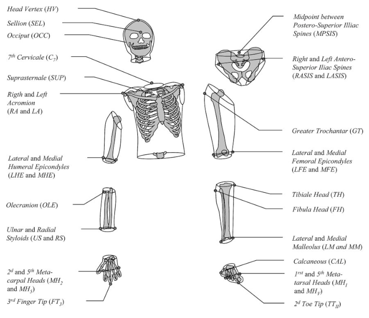
Các trục SCS được chọn tuân thủ các khuyến nghị chung trước đây của ISB [WU 95], tức là trục X hướng ra sau, trục Y hướng lên trên và trục Z hoàn thành tam diện thuận, theo hướng trung – bên. Cuối cùng, về JCS và thứ tự của dãy xoay, trục chuyển động đầu tiên được gắn có hệ thống với đoạn gần (thường là trục gập/duỗi) và trục cuối cùng gắn với đoạn xa (thường là trục xoay trong/ngoài). Trục trung gian, gọi là trục nổi, được hình thành như đường vuông góc chung với hai trục còn lại của JCS.
Ví dụ, hãy giải thích khớp hông. Các điểm mốc giải phẫu được sử dụng là các gai mào chậu trước – trên (ASIS) và sau – trên (PSIS) của khung chậu, các lồi cầu trong và ngoài (MFE, LFE) và tâm chỏm xương đùi trên xương đùi. Đối với điểm cuối này, rõ ràng không thể dùng sờ nắn và do đó nó được xác định hoặc từ các phương trình hồi quy [BELL 90, DAV 91, SEI 95] hoặc, tốt hơn, bằng các phương pháp chức năng [CAP 84, CHE 96, LEA 99]. Từ các điểm này, các hệ tọa độ của các đoạn khung chậu và xương đùi được hình thành như sau [CAP 95]:
– Khung chậu (O_p, X_p, Y_p, Z_p):
- O_p: gốc tọa độ trùng với tâm chỏm xương đùi;
- Z_p: trục song song với đường đi qua các gai mào chậu ASIS, hướng sang phải;
- X_p: trục vuông góc với Z_p trong mặt phẳng được tạo bởi các gai mào chậu ASIS và điểm giữa của các gai mào chậu PSIS, hướng ra trước;
- Y_p: trục vuông góc với X_p và Z_p tạo thành một tam diện thuận, hướng lên trên.
– Xương đùi (O_f, X_f, Y_f, Z_f):
- O_f: gốc tọa độ trùng với tâm chỏm xương đùi (do đó trùng với gốc của hệ tọa độ khung chậu);
- Y_f: trục nối điểm giữa của các lồi cầu trong và ngoài và gốc O_f, hướng lên trên;
- Z_f: trục vuông góc với Y_f trong mặt phẳng được tạo bởi gốc và hai lồi cầu, hướng sang phải;
- X_f: trục vuông góc với Y_f và Z_f tạo thành một tam diện thuận, hướng ra trước.
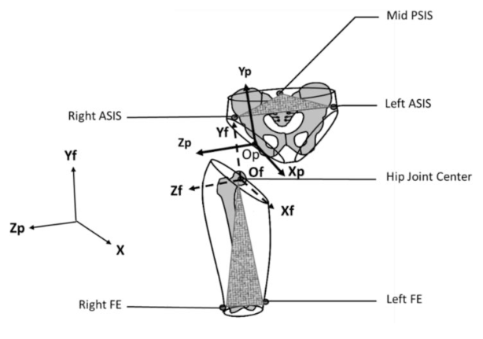
Hệ tọa độ của khớp hông. “JCS” của khớp hông do đó được hình thành từ một trục của đoạn gần (khung chậu), Z_p, và một trục của đoạn xa (xương đùi), Y_f. Trục thứ ba của JCS, trục nổi, vuông góc tại mọi thời điểm, vuông góc với hai trục này. Cuối cùng, thứ tự của dãy xoay là Z–X–Y, tương ứng với gập/duỗi quanh trục Z_p, tiếp theo là dạng/ngược dạng quanh trục nổi X, và cuối cùng là xoay trong/ngoài quanh trục Y_f.
Bất cứ khi nào có thể, chúng ta nên tuân thủ các khuyến nghị này để cho phép so sánh và tổng hợp dữ liệu từ các nghiên cứu khác nhau. Tuy nhiên, đối với một số khớp, các khuyến nghị này không thể dùng trong phân tích tất cả các chuyển động. Đặc biệt, đây là trường hợp của khớp ổ chảo – cánh tay trong phức hợp vai, giữa xương cánh tay và xương bả vai. Đối với khớp này, ISB khuyến nghị dãy xoay Y–X–Y, tương ứng với hướng của mặt phẳng nâng cánh tay quanh trục Y_s gắn với xương bả vai, tiếp theo là nâng quanh trục nổi X và cuối cùng là xoay trong/ngoài quanh trục Y_h gắn với xương cánh tay [WU 05].
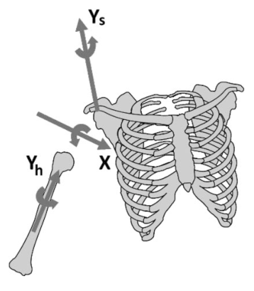
Tuy nhiên, dãy xoay này có thể, một mặt, dẫn đến “khóa gimbal” (khi các trục Y_s và Y_h được căn thẳng hàng sát nhau) và mặt khác, các góc thu được khó diễn giải từ quan điểm lâm sàng đối với một số chuyển động vai. Các dãy khác nhau đã được thử nghiệm trên một số chuyển động phân tích [ŠEN 06], mà không đạt được một giải pháp phù hợp cho tất cả các chuyển động này. Các tác giả khác đã đề xuất căn chỉnh các trục của SCS xa với các trục của đoạn gần trong một vị trí tham chiếu ban đầu, và chỉ ra rằng điều này cải thiện việc diễn giải kết quả và giảm thiểu sự biến thiên giữa các đối tượng đối với sự nâng trong mặt phẳng bả vai [HAG 11, LEV 07]. Đối với các chuyển động phức tạp, chẳng hạn như giao bóng tennis, dãy X–Z–Y được tìm thấy là hiệu quả nhất [BON 10]. Do đó, đối với khớp này, có vẻ như dãy xoay phải được điều chỉnh theo loại chuyển động vai được phân tích. Trong trường hợp này, các lựa chọn đã thực hiện phải được quy định rõ để các kết quả thu được có thể được sử dụng rộng rãi.
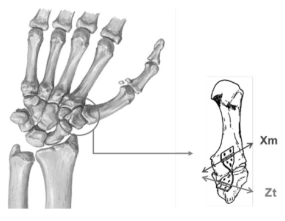
Hãy đưa ra một ví dụ khác nơi các khuyến nghị có thể được thảo luận. ISB khuyến nghị, cho tất cả các khớp ngón tay, dãy Z–X–Y [WU 05]. Về khớp tháp – bàn tay ở gốc của ngón cái, sự lựa chọn này không phải là phù hợp nhất. Thật vậy, khớp này có hai bậc tự do [CHE 11]: gập/duỗi quanh trục Z_t gắn với xương tháp và dạng/ngược dạng quanh trục X_m gắn với xương bàn tay thứ nhất. Cũng vậy, dãy Z–Y–X, ưu tiên các trục khả động của khớp, cung cấp các góc nhất quán hơn [CHE 09].
3.3. Các độ dịch chuyển khớp
Mặc dù hầu hết các nghiên cứu tập trung vào các góc khớp và bỏ qua các độ dịch chuyển, đặc biệt vì hiện tại có rất ít hệ đo lường in vivo đủ chính xác để đánh giá thích hợp các độ dịch chuyển, nhưng mô tả hoàn chỉnh về chuyển động khớp đòi hỏi phải giải quyết vấn đề này. Ấn phẩm của Grood & Suntay, dựa trên các khuyến nghị của ISB về mô tả các góc khớp, cũng đề xuất một phương pháp xác định “độ dịch chuyển khớp” áp dụng cho khớp gối [GRO 83]. Mô tả này cho phép diễn giải lâm sàng, nhưng tương ứng, nói đúng ra, với độ dịch chuyển của một điểm cụ thể trong đoạn khâu hơn là dịch chuyển của nó (thành phần “t” của chuyển động dọc theo trục xoắn, a priori khác với vectơ dịch chuyển, ngoại trừ khi điểm O thuộc trục, xem Hình 3.10). Rõ ràng, biên độ của các “độ dịch chuyển” được xác định bằng phương pháp này phụ thuộc vào điểm cụ thể được chọn, trong khi dịch chuyển, về mặt lý thuyết, có một giá trị duy nhất cho tất cả các điểm của đoạn khâu.
Trong bài báo này, các “độ dịch chuyển khớp” được xác định bởi vị trí tương đối của hai điểm tham chiếu, O_f và O_t, được gắn tương ứng lên SCS của xương đùi và xương chày, được đặc trưng bởi vectơ H = O_f O_t, các điểm này được cho là thẳng hàng trong tư thế trung tính của khớp. Các thành phần vectơ H, trong hệ tọa độ không trực chuẩn của JCS, do đó là “độ dịch chuyển khớp”:
H⃗ = S_z · Z_f + S_x · X + S_y · Y_t
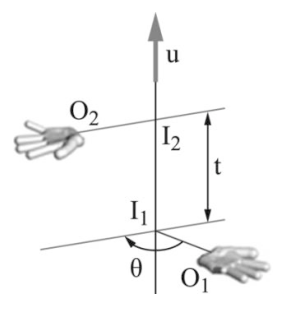
Các thành phần này, được minh họa trong Hình 3.11, được tính từ các tích hỗn tạp của các vectơ khác nhau, theo các quan hệ [CHE 00, SMI 64]:
S_z = [ Z_f , X , Y_t ] / [ X , Z_f , Y_t ] S_x = [ X , Z_f , Y_t ] / [ X , Z_f , Y_t ] (tử số là tích hỗn của X, Z_f, Y_t) S_y = [ X , Z_f , Y_t ] / [ X , Z_f , Y_t ] (tử số là tích hỗn của X, Z_f, Y_t) với tích hỗn tạp được định nghĩa bởi: [ Z_f , X , Y_t ] = (Z_f × X) · Y_t
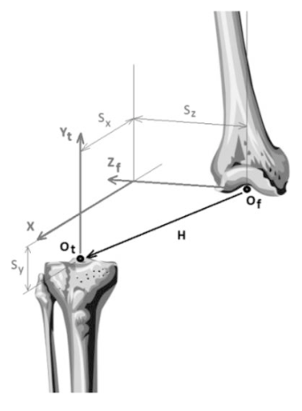
Các tác giả sau đó xác định các tham số khác, gọi là “độ dịch chuyển lâm sàng”, tương ứng với thuật ngữ lâm sàng hiện có cho khớp gối: độ lệch xương chày trong – ngoài q1, độ kéo xương chày trước – sau q2, độ tách – nén khớp q3. Các tham số này được tính đơn giản từ tích vô hướng giữa vectơ H⃗ và mỗi vectơ JCS: q1 = H⃗ · Z_f ; q2 = H⃗ · X và q3 = − H⃗ · Y_t
Dấu âm của quan hệ thứ ba được đưa vào để lực kéo được xác định dương.
Cũng có thể biểu diễn các “độ dịch chuyển lâm sàng” theo “độ dịch chuyển khớp” bằng các quan hệ (cho khớp gối phải): q1 = S_z + S_y·cos β ; q2 = S_x và q3 = − S_y − S_z·cos β, trong đó β biểu diễn góc varus–valgus của khớp gối.
Một lần nữa, các định nghĩa được đề xuất cho khớp gối đã được khái quát hóa cho các khớp khác [WU 02, WU 05].
Tuy nhiên, nếu nỗ lực của ISB nhằm chuẩn hóa cách biểu diễn các phép xoay khớp là hoàn toàn đáng khen ngợi và thiết yếu để các nhóm khác nhau có thể so sánh kết quả của họ, thì chúng ta đã thấy rằng có một số khớp mà các khuyến nghị này không hoạt động. Hơn nữa, chúng ta phải ghi nhớ rằng động học khớp tính toán được rất nhạy cảm với các sai số đo lường, như chúng ta sẽ thấy trong chương tiếp theo.